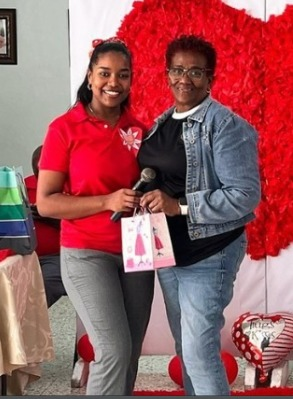
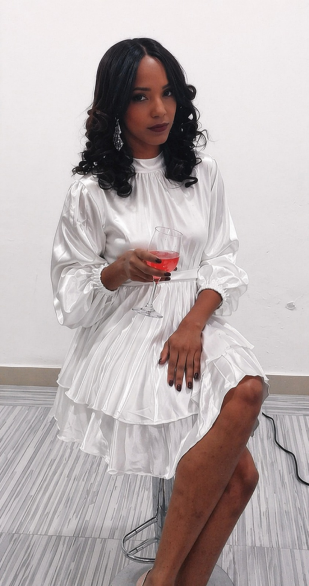
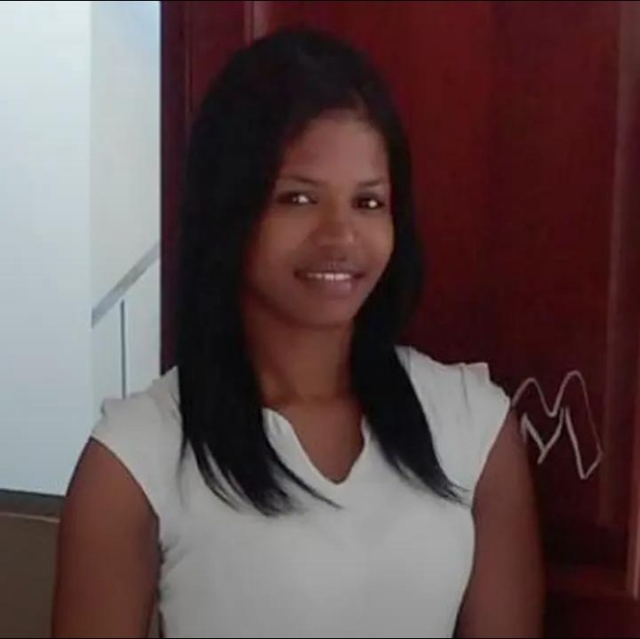

What is a Biography?
A biography is a written account of a person's life, achievements, and contributions to society. Through biographies, we learn how individuals — through courage, discipline, creativity, and perseverance — shaped the world around them and left a lasting impact for future generations.
Each biography covers: early life · important achievements · contributions to society · impact on the world
Five Remarkable Lives
Community Educators & ProfessionalsCamill George Ubiera
Born September 21 · Consuelo, San Pedro de Macorís, Dominican Republic · Educator
Early Life
Camill George Ubiera was born on September 21 in Consuelo, San Pedro de Macorís, where she grew up surrounded by her community. From an early age she described herself as a woman of deep faith, guided by what she calls Divine Providence. Her upbringing shaped her core values of responsibility, respect, and collaboration.
Education & Career
She pursued studies in Spanish Language and Mathematics, disciplines that would lead her to the teaching profession. Despite her natural shyness, she found her true calling in the classroom, gradually overcoming personal barriers through determination and her genuine commitment to helping students grow and succeed.
Challenges & Resilience
Throughout her life, Camill faced significant personal difficulties, including the painful loss of family members. She credits her faith, the steadfast support of her mother, and the encouragement of her brother with helping her overcome each hardship and continue moving forward with purpose and dignity.
Impact & Legacy
Camill's greatest aspiration is to be remembered as an example — not only as a skilled professional, but as a devoted Christian and loving mother. She aims to leave a lasting positive mark on all those she encounters, inspiring others through her patience, her actions, and her unwavering faith in God.
"My goal is to be an example as a Christian, mother, and professional, leaving a positive impact on others."
— Camill George Ubiera
Keyla Yanibel Monegro
Born July 31, 1997 · San Pedro de Macorís, Dominican Republic · Health Professional & Educator
Early Life
Keyla Yanibel Monegro was born on July 31, 1997, in San Pedro de Macorís. From a young age, she demonstrated a strong interest in academic growth and personal improvement — qualities that defined her path into the health sciences. Her early years were marked by curiosity and a genuine desire to make a positive difference in people's lives.
Education & Achievements
She studied at a Polytechnic school before continuing at Divina Providencia and institutions in La Romana, specializing in nursing and bioanalysis. She earned recognition as an outstanding student and served on the student council, demonstrating both academic excellence and a strong spirit of leadership and collaboration.
Contributions to Health
Keyla's primary contributions focus on healthcare, with a special emphasis on promoting mental and physical well-being in her community. She works to raise awareness about mental health — a field that is often overlooked — and provides guidance and support to those who need professional care and compassionate attention.
Perseverance & Legacy
Her journey was not without obstacles. She faced periods of demotivation and the practical challenges of distance and time management throughout her studies. Through hard work, discipline, and unwavering commitment to her goals, she overcame every challenge. Today, Keyla stands as an inspiring example of perseverance and dedicated service to others.
"An example of perseverance, discipline, and commitment to helping others."
— Voices of the Community, 2026
María Elena de la Cruz García
Born December 21, 1992 · San Pedro de Macorís, Dominican Republic · Systems Engineer & Informática Teacher · 11 years of experience
Early Life & Education
María Elena de la Cruz García was born on December 21, 1992, in San Pedro de Macorís. She pursued a degree in Systems Engineering at the Universidad Central del Este (UCE), a career she chose because of its strong demand in the job market. Her technical formation gave her the expertise that would later prove invaluable in her teaching career.
Path to Teaching
Although becoming a teacher was not part of her original plan, the opportunity presented itself and she embraced it fully. Over 11 years of teaching informática, she has combined her technical expertise with a genuine passion for education. What she values most is knowing she is preparing students for success in an increasingly digital world.
Greatest Achievement
One of the most meaningful moments of her career was helping a student navigate an extremely difficult personal situation. Her timely guidance and referral to professional support may have saved that student's life — a powerful reminder of the profound impact a dedicated, caring teacher can have beyond the walls of the classroom.
Impact & Vision
She encourages all students to pursue informática because of the extraordinary opportunities the field provides. Despite facing challenges adapting to the educational system, she has continued with dedication. Her deepest hope is to be remembered as a teacher who made a genuine and lasting positive impact on her students' lives.
"She hopes to be remembered as a teacher who made a positive impact on her students' lives."
— Voices of the Community, 2026
Rosangela Ame Severino
Born December 29 · Ramón Santana, Dominican Republic · Psychologist, University Lecturer & Arts Teacher
Early Life & Formation
Rosangela Ame Severino was born on December 29 in the municipality of Ramón Santana. She pursued her higher education at the Universidad Central del Este (UCE), graduating in Psychology. Her academic training combined administrative knowledge with deep psychological expertise, establishing a multidisciplinary foundation that would shape her entire career.
Career in Education
Her entry into teaching began unexpectedly — an initial professional opportunity she embraced and made her own. With five cumulative years of experience, she has worked in both the private sector as a university lecturer for two years, and the public sector as an Arts Education teacher for three years, building meaningful and lasting bonds with students from all backgrounds.
Overcoming Challenges
One of her greatest professional challenges was adapting to the structural differences between university education and the public school system. Each environment operates with different rhythms, expectations, and resources. Navigating these contrasts required flexibility, creativity, and a willingness to continuously grow and reinvent herself as an educator.
Impact & Legacy
Her proudest achievement has been the deep impact she has had on her students — recognized most meaningfully when a student dedicated their graduation thesis to her. Beyond academic content, her mission is to be remembered for her boundless patience and extraordinary ability to motivate, inspiring new generations to pursue their goals with perseverance and heart.
"Her primary goal is for students to remember her for her boundless patience and her ability to motivate."
— Voices of the Community, 2026Rosa Celeste Ortiz Mariano
Born February 3, 1993 · La Romana / San Pedro de Macorís, Dominican Republic · English Teacher, UCE
Early Life & Family
Rosa Celeste Ortiz Mariano was born on February 3, 1993, in La Romana, and at just one year old moved to San Pedro de Macorís, where she grew up surrounded by family love. She shares her life with her parents, stepfather, three sisters — Rosanna Michell, Mary, and Nayeli — and two brothers. She remembers a joyful childhood full of neighborhood games like "El Escondido" and a home where she always felt safe, loved, and nurtured.
Education & School Years
Rosa attended Los Milagros School in El Invi, where she discovered her love of learning. Spanish was her favorite subject, and she enjoyed painting trees and houses in art class. Though mathematics was more challenging, she remained dedicated and earned a recognition award in third grade. These early experiences — alongside her deep admiration for her mother — shaped the person and educator she would become.
Achievements & Faith
One of Rosa's proudest accomplishments is becoming an English teacher at the university level at UCE — a goal she once doubted she could reach. She has participated in Olympiads, school celebrations, and witnessed students communicating confidently in English and French. Her Christian faith is a cornerstone of her identity, guiding her values of compassion, kindness, and responsibility toward her family and students.
Vision for the Future
Rosa hopes to be remembered as a kind and inspiring teacher who helped her students believe in themselves and enjoy learning. She encourages students to never fear mistakes, to practice every day, and to stay curious and confident. She aspires to promote respect, kindness, and education in her community — helping young people build the skills and mindset they need for a better future.
"With effort and dedication, anyone can achieve their goals. Never fear making mistakes — practice daily, stay curious, and stay confident."
— Rosa Celeste Ortiz MarianoEditorial Message
"The digital newspaper allows us to explore real-world events and understand the role of journalists, experts, and community leaders in society. By reporting facts, opinions, research, and evidence, we learn how information helps communities understand problems, analyze situations, and develop solutions."
— The Editorial Team, Voices of the Community, April 2026
References & Sources
- Listín Diario — listindiario.com · Accessed April 14, 2026
- Diario Libre — diariolibre.com · Accessed April 14, 2026
- El Nacional — elnacional.com.do · Accessed April 14, 2026
- AlMomento.net — almomento.net · Accessed April 13–14, 2026
- Noticias SIN — noticiassin.com · Accessed April 12–14, 2026
- ESPN Deportes — espndeportes.espn.com · Accessed April 13, 2026
- MLB.com (Spanish Edition) — mlb.com/es/news · Accessed April 13, 2026
- Olympics.com — olympics.com/es/noticias · Accessed April 2026
- Centro de Operaciones de Emergencias (COE) — coe.gob.do · April 2026
- Remolacha.net — remolacha.net · Accessed April 14, 2026
- Personal interviews and biographies submitted by subjects · April 2026